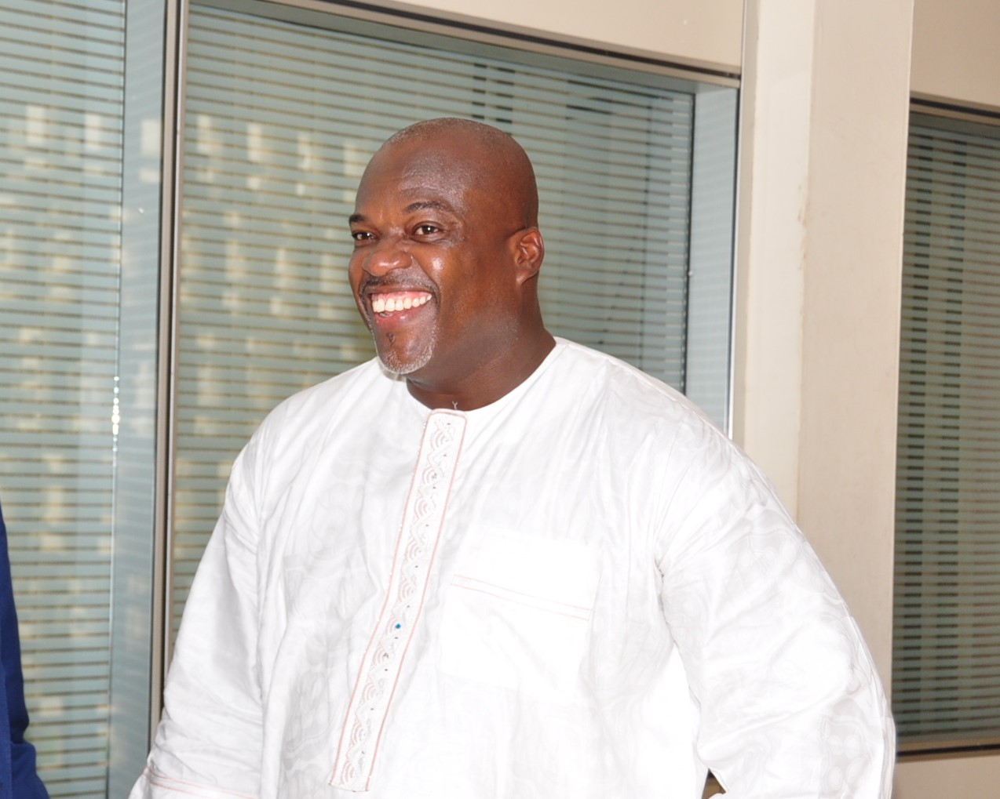

Latest Blogs
Smart Africa and Afriwave Telecom enter into an agreement to advance connectivity and data capacity in Africa
Kigali, Rwanda – Monday, 8th November 2021 - Smart Africa and Afriwave Telecom Ghana Limited have announced a partnership where they will collaborate in the One Africa Network and Interconnect Clearinghouse initiative, the Data Centre and Cloud Project and the Intra-Africa Connectivity project to advance the digital transformation of the continent.
READ MORE
Afriwave Telecom provides quality water for the people of Ekye-Amanfrom
Afriwave Telecom Ghana Limited as part of its sustainable Corporate Social Responsibility (CSR) initiative has rehabilitated an existing water facility at Ekye Amanfrom in the Kwahu Afram Plains South District in the Eastern Region of Ghana.
READ MORE
Afriwave Telecom, A licensed Ghanaian Interconnect Clearinghouse (ICH) operator joins the Smart Africa Alliance.
Smart Africa has announced that Afriwave Telecom has become the latest private sector member of the Smart Africa Alliance. The organisations will work together towards the vision of transforming Africa into a single digital market. Smart Africa is an alliance of 32 African countries, international organisations and global private sector players tasked with defining Africa’s digital agenda.
READ MORE
Leave a comment